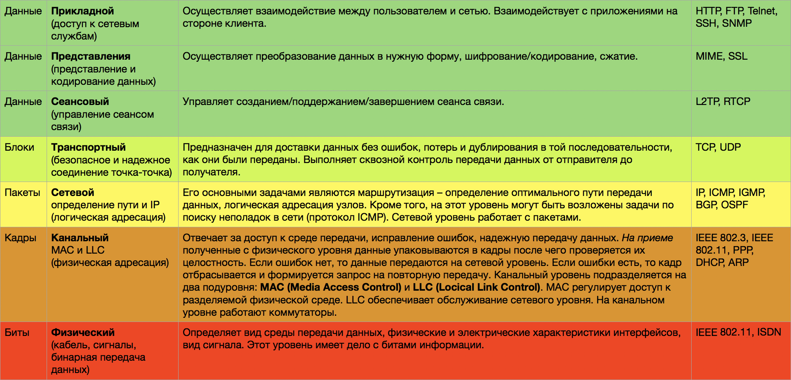
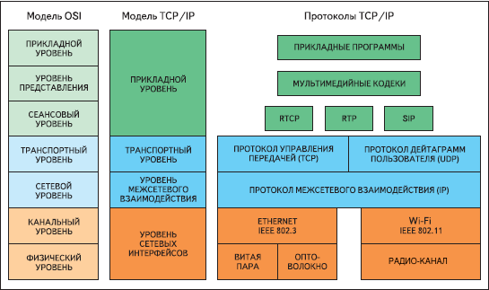
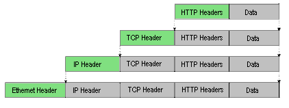

Programming, robotics, traveling
Часто в проектах которыми я занимаюсь приходится оперировать и обсуждать уровнями модели OSI. Для унификации знаний на эту тему подготовил эту статью. Основным источником для неё послужила статья с pcradar.ru, а я лишь добавил немного информации и причесал оформление.
Для согласования работы устройств сети от разных производителей, обеспечения взаимодействия сетей, которые используют различную среду распространения сигнала создана эталонная модель взаимодействия открытых систем (сетевая модель OSI).
Эталонная модель построена по иерархическому принципу. Каждый уровень обеспечивает сервис вышестоящему уровню и пользуется услугами нижестоящего уровня.
Обработка данных начинается с прикладного уровня. После этого, данные проходят через все уровни эталонной модели, и через физический уровень отправляются в канал связи. На приеме происходит обратная обработка данных.
В эталонной модели OSI вводятся два понятия: протокол и интерфейс.
Всего существует семь уровней эталонной модели OSI. Стоит отметить, что в реальных стеках используется меньше уровней. Например, в популярном TCP/IP используется всего четыре уровня.

После знакомства со эталонной моделью, рассмотрим стек протоколов TCP/IP.

В модели TCP/IP определено четыре уровня. Как видно из рисунка выше – один уровень TCP/IP может соответствовать нескольким уровням модели OSI.
Далее рассмотрим еще одно важное понятие, которое позволяет понять каким образом происходит подготовка пакета данных для передачи.
Инкапсуляция – это метод упаковки пакета данных, при котором независимые друг от друга служебные заголовки пакета абстрагируются от заголовков нижестоящих уровней путем их включения в вышестоящие уровни.

Рассмотрим на конкретном примере. Пусть мы хотим попасть с компьютера на сайт.
После всех этих процедур пакет в виде битов информации передается по сети. На приеме происходит обратная процедура. Web-сервер на каждом уровне будет проверять соответствующий заголовок. Если проверка прошла удачно, то заголовок отбрасывается и пакет переходит на верхний уровень. В противном случае весь пакет отбрасывается.